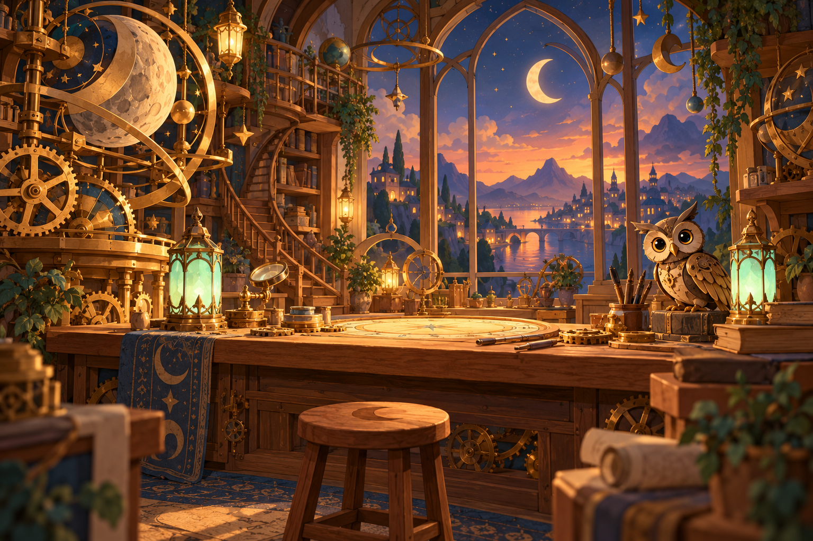

달빛을 다시 움직이는 수학서로 다른 리듬이
서로 다른 리듬이
하나가 되는 순간.
막대를 나누고, 시계를 돌려요.
최대공약수와 최소공배수로 잠든 공방을 깨워 주세요.
THE WORKSHOP
오늘의 수리 의뢰
조작하면 결과를 미리 볼 수 있어요. 준비되면 실행해 보세요.
달빛 축제가 시작됐어요!
8개의 시계를 모두 고쳤어요. 더 긴 공통 길이와 더 이른 공통 시간을 찾아낸 덕분이에요.
이 브라우저에서는 저장할 수 없어 현재 방문 중에만 진행이 유지돼요.